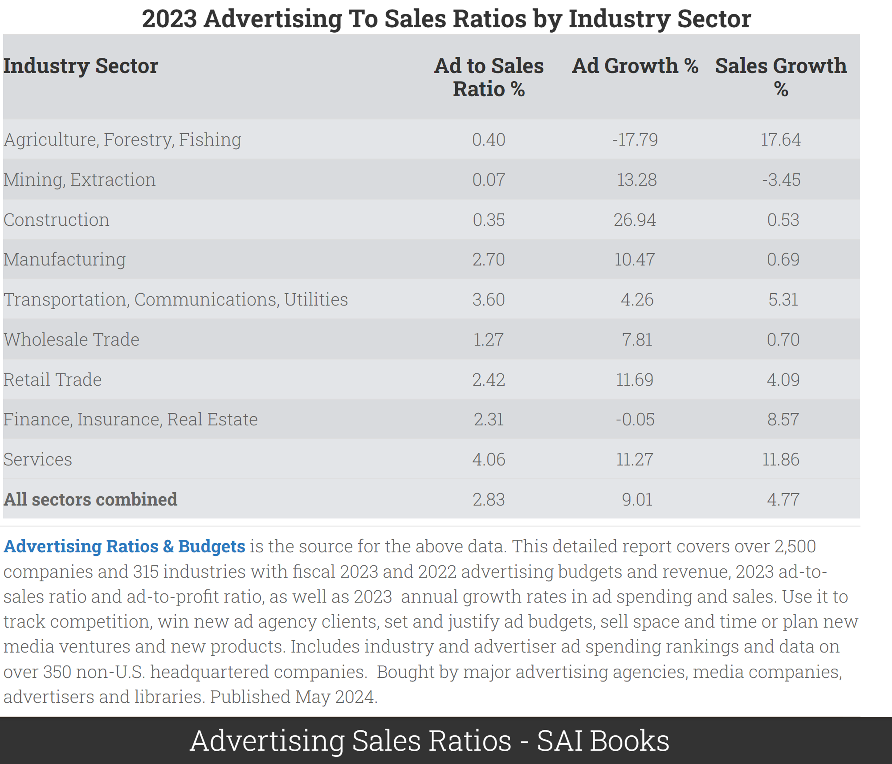
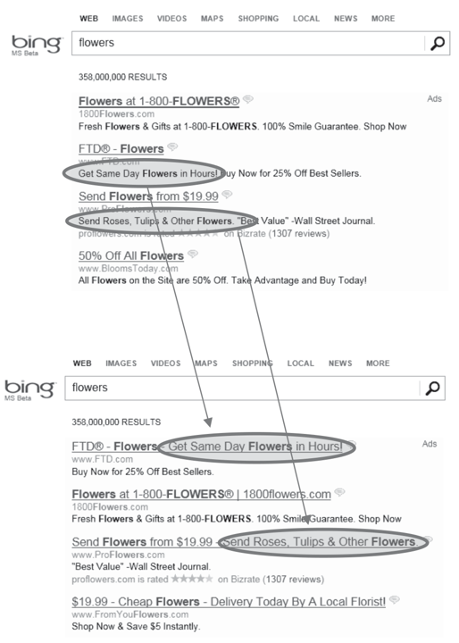
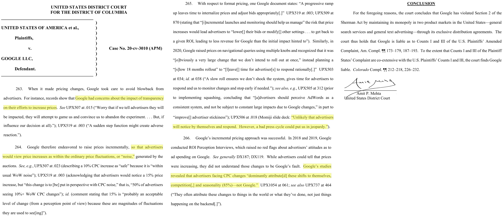
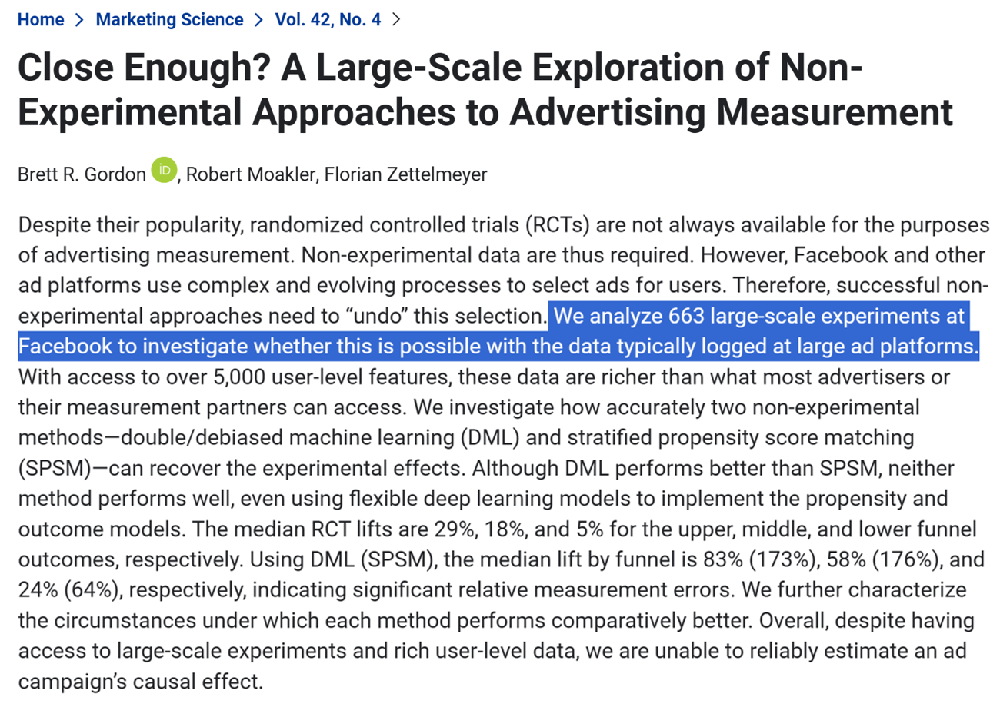

Causality & Advertising
UCSD MGTA 451-Marketing
Advertising
Some introductory and motivating facts



Typical net margin: 8-10% (see Damodaran)
- So modal firm could increase EBITDA 28-35% by dropping ads: (8+2.83)/8=1.35 - Or could it? What would happen to revenue?
Toy economics of advertising
Suppose we pay $20 to buy 1,000 digital ad OTS. Suppose 3 people click, 1 person buys.
Ad profit > 0 if transaction margin > $20
- But we bought ads for 999 people who didn't buyOr, ad profit > 0 if CLV > $20
- Long-term mentality justifies increased ad budgetOr, ad profit > 0 if CLV > $20 and if the customer would not have purchased otherwise
- This is "incrementality" - But how would we know if they would have purchased otherwise?Ad effects are subtle–typically, 99.5-99.9% don’t convert–but ad profit can still be robust
- Ad profit depends on ad cost, conversions, margin, objective formulation
Causality
Examples, fallacies and motivations

Suppose 10 outcomes, 1000 predictors, N=100,000 obs
- Outcomes might include visits, sales, reviews, ... - Predictors might include customer attributes, session attributes, ...Suppose everything is noise, no true relationships
- The distribution of the 10,000 correlation coefficients would be Normal, tightly centered around zero - A 2-sided test of {corr == 0} would reject at 95% if |r|>.0062We should expect 500 false positives
- What is a 'false positive' exactly?In general, what can we learn from a significant correlation?
- "These two variables likely move together." Nothing more.
Classic misleading correlations
“Lucky socks” and sports wins
- Post hoc fallacy [1] (precedence indicates causality AKA superstition)Commuters carrying umbrellas and rain
- Forward-looking behaviorKids receiving tutoring and grades
- Reverse causality / selection biasIce cream sales and drowning deaths
- Unobserved confoundsCorrelations are measurable & usually predictive, but hard to interpret causally
- Correlation-based beliefs are hard to disprove and therefore sticky - Correlations that reinforce logical theories are especially sticky - Correlation-based beliefs may or may not reflect causal relationships
“Revenue too high alert”


Agenda
- Causality
- Experiments, quasi-exp & corr, applied to ads
- Why are correlations used so often?
- Ad/sales modeling frameworks

Causal Inference
Suppose we have a binary “treatment” or “policy” variable \(T_i\) that we can “assign” to person \(i\)
- Examples: Advertise, Serve a design, Recommend - "Treatment" terminology came from medical literatureSuppose person \(i\) could have a binary potential “response” or “outcome” variable \(Y_i(T_i)\)
- Examples: Visit site, Click product, Add to Cart, Purchase, Rate, Review - Looks like the marketing funnel model we saw previouslyImportant: \(Y_i\) may depend fully, partially, or not at all on \(T_i\), and the dependence may be different for different people
- Person 1 may buy due to an ad; person 2 may stop due to an ad
Why care?
We want to maximize profits \(\pi_i(Y_i(T_i), T_i)\)
Suppose \(Y_i=1\) contributes to revenue; then \(\frac{d\pi_i}{dY_i} >0\)
Suppose \(T_i=1\) is costly; then \(\frac{d\pi_i}{dT_i}=\frac{\partial \pi_i}{\partial Y_i}\frac{\partial Y_i}{\partial T_i}+\frac{\partial \pi_i}{\partial T_i}\)
We have to know \(\frac{\partial Y_i}{\partial T_i}\) to optimize \(T_i\) assignments
- Called the "treatment effect" (TE)Profits may decrease if we misallocate \(T_i\)
Fundamental Problem of Causal Inference
We can only observe either \(Y_i(T_i=1)\) or \(Y_i(T_i=0)\), but not both, for each person \(i\)
- The case we don't observe is called the "counterfactual"This is a missing-data problem that we cannot resolve. We only have one reality
- Models can only compensate for missing data by assumption
So what can we do?
Experiment. Randomize \(T_i\) and estimate \(\frac{\partial Y_i}{\partial T_i}\) as avg \(Y_i(T_i=1)-Y_i(T_i=0)\)
- Called the "Average Treatment Effect" - Creates new data; costs time, money, attention; deceptively difficult to design and then act onUse assumptions & data to estimate a “quasi-experimental” average treatment effect using archival data
- Requires expertise, time, attention; difficult to validate; not always possibleUse correlations: Assume past treatments were assigned randomly, use past data to estimate \(\frac{\partial Y_i}{\partial T_i}\)
- Easier than 1 or 2; but T is only randomly assigned when we run an experiment, so what exactly are we doing here?Fuhgeddaboutit, go with the vibes, do what we feel
How much does causality matter?
- How hard should we work?Organizational returns or costs of getting it right?
Data thickness: How likely can we get a good estimate?
How does empirical approach fit with organizational analytics culture? Will we act on what we learn?
Individual: promotion, bonus, reputation, career; Will credit be stolen or blame be shared?
Accountability: Will ex-post attributions verify findings? Will results threaten or complement rival teams/execs?
- Analytics culture starts at the top
Ad/sales example: Experiment
Randomly assign ads to customer groups on a platform; measure sales in each group
- Often called "incrementality" in ad/sales context - Pros: AB testing is easy to understand, easy to implement, easy to validate - Cons: Can we trust the platform's "black box"? Will we get the data and all available insights? Could platform knowledge affect future ad costs?Randomize over messages within a campaign
Randomize over times, places, consumer segments
Randomize over budgets and bids
Randomlize over platforms, publishers, behavioral targets, etc., to compare RoAS across options
RoAS = Return on Ad Spend. RoAS defined as Sales / AdSpend or (Sales-AdSpend)/AdSpend
Experimental necessary conditions
Stable Unit Treatment Value Assumption (SUTVA)
- Treatments do not vary across units within a treatment group - One unit's treatment does not change other units' potential outcomes, i.e. treatments in one group do not affect outcomes in another group - Often violated when treated units interact on a platform - Violations called "interference"; remedies usually start with cluster randomizationObservability
- Non-attrition, i.e. unit outcomes remain observableCompliance
- Treatments assigned are treatments received - We have partial remedies when noncompliance is directly observedStatistical Independence
- Random assignment of treatments to units
2. Ad/sales example: Experiment
Key issues for any experimental design:
- Always run A:A test first. Validate the infrastructure before trusting a result
- Can we agree on the opportunity cost of the experiment? "Priors"
- How will we act on the (uncertain) findings? Have to decide before we design. We don't want "science fair projects"
- Simple example: Suppose we estimate RoAS at 1.5 with c.i. [1.45, 1.55]. Or, suppose we estimate RoAS at 1.5 with c.i. [-1.1, 4.1]. How will we act?
Quasi-experiments Vocab
Model: Mathematical relationship between variables that simplifies reality, eg y=xb+e
Identification strategy: Set of assumptions that isolate a causal effect \(\frac{\partial Y_i}{\partial T_i}\) from other factors that may influence \(Y_i\)
- A system to compare apples with apples, not apples with orangesWe say we “identify” the causal effect if we have an identification strategy that reliably distinguishes \(\frac{\partial Y_i}{\partial T_i}\) from possibly correlated unobserved factors that also influence \(Y_i\)
If you estimate a model without an identification strategy, you should interpret the results as correlational
- This is widely, widely misunderstoodYou can have an identification strategy without a model, e.g.
avg \(Y_i(T_i=1)-Y_i(T_i=0)\)
Usually you want both. Models help with quantifying uncertainty and estimating treatment effects by controlling for relevant observables
2. Ad/sales: Quasi-experiments
Goal: Find a “natural experiment” in which \(T_i\) is “as if” randomly assigned, to identify \(\frac{\partial T_i}{\partial Y_i}\)
Possibilities:
- Firm starts, stops or pulses advertising without changing other variables, especially when staggered across times or geos
- Competitor starts, stops or pulses advertising
- Discontinuous changes in ad copy
- Exogenous changes in ad prices, availability or targeting (e.g., biannual elections)
- Exogenous changes in addressable market, website visitors, or other factorsDFS TV ad effects on Google Search

Ad/sales: Quasi-experiments (2)
Or, construct a “quasi-control group”
Customers or markets with similar demand trends where the firm never advertised
Competitors or complementors with similar demand trends that don’t advertise
Helpful identification strategies: Difference in differences, Synthetic control, Regression discontinuity, Matching, Instrumental variables
In each case, we try to predict our missing counterfactual data, then estimate the causal effect as observed outcomes minus predicted outcomes
3. Ad/sales example: Correlational
Just get historical data on \(Y_i\) and \(T_i\) and run a regression
Most people use OLS, but Google's CausalImpact R package is also popularThe implicit assumption is that past ads were allocated randomly, i.e. correlation\(==\)causality
"Better to be vaguely right than precisely wrong"
But are we the guy in the truck bed?In truth, past ads were only random if we ran an experiment
Strongest args for corr(ad,sales)
Corr(ad,sales) should contain signal
- If ads cause sales, then corr(ad,sales)>0 (probably) (we assume)Some products/channels just don’t sell without ads
- E.g., Direct response TV ads for telephone response
- Career professionals say advertised phone #s get 0 calls without TV ads, so we know the counterfactual
- Then they get 1-5 calls per 1k viewers, lasting up to ~30 minutes
- What are some digital analogues to this?However, this argument gets pushed too far
- For example, when search advertisers disregard organic link clicks when calculating search ad click profits
- Notice the converse: corr(ad,sales)>0 does not imply a causal effect of ads on salesProblem 1 with corr(ad,sales)
Advertisers try to optimize ad campaign decisions
E.g. surfboards in coastal cities, not landlocked citiesIf ad optimization increases ad response, then corr(ad,sales) will confound actual ad effect with ad optimization effect
More ads in san diego, more surfboard sales in san diego
Corr(ad,sales) usually overestimates the causal effect, encourages overadvertisingMany, many firms basically do this
It's ironic when firms that don't run experiments assume that past ads were randomized Problem 2 with corr(ad,sales)
- How do most advertisers set ad budgets? Top 2 ways:
Percentage of sales method, e.g. 3% or 6%
Competitive parity
…others…
Do you see the problem here?

Problem 3 with corr(ad,sales)
Leaves marketers powerless vs
bigcolossal ad platformsGoogle and Meta withhold data and obfuscate algorithms
- How many ad placements are incremental? - How many ad placements target likely converters? - How can advertisers react to adversarial ad pricing? - How can advertisers evaluate brand safety, targeting, context?Have ad platforms ever left ad budget unspent?
- Would you, if you were them? - If not, why not? What does that imply about incrementality?To balance platform power, know your ad profits, vote with your feet
U.S. v Google (2024, search case)

Does Corr(ad,sales) work?



Do ad experiments work?
Do ad experiments work?
Do ad experiments work?
Why are some teams OK with corr(ad,sales)?
Some worry that if ads go to zero -> sales go to zero
- For small firms or new products, this may be good logic - Downside of lost sales may exceed downside of foregone profits - However, claim may imply a customer satisfaction problem. Happy customers usually share their experiences with others. If you really believe this, try a referral program - Plus, we can run experiments without setting ads to zero, e.g. weight testsSome firms assume that correlations indicate direction of causal results
- The guy in the truck bed is pushing forwards right? - Biased estimates might lead to unbiased decisions - But direction is only part of the picture; what about effect size?
Why are some teams OK with corr(ad,sales)?
CFO and CMO negotiate ad budget
- CFO asks for proof that ads work - CMO asks ad agencies, platforms & marketing team for proof - CMO sends proof to CFO ; We all carry onFew rigorous analytics cultures or ex-post checks
- In some cultures, ex-post checks can get personalEstimating causal effects of ads can be pretty difficult
- Many firms lack design expertise, discipline, execution skill - Ad/sales tests may be statistically inconclusive, especially if small - Tests are often designed without subsequent actions in mind, then fail to inform future decisions ("science fair projects")
Why are some teams OK with corr(ad,sales)?
Platforms often provide correlational ad/sales estimates
- Which is larger, correlational or experimental ad effect estimates? - Which one would most client marketers prefer? - Platform estimates are typically "black box" without neutral auditors - Sometimes platforms respond to marketing executive demand for good numbers - "Nobody ever got fired for buying [famous platform brand here]"Historically, agencies usually estimated RoAS
- Agency compensation usually relies on spending, not incremental sales - Principal/agent problems are common - Many marketing executives start at ad agencies - "Advertising attribution" is all about maximizing credit to ads - These days, more marketers have in-house agencies, and split work - Should adFX team report to CFO or CMO?
- I believe we're a few years into a generational shift
- However, corr(ad,sales) is not going away
- Union(correlations, experiments) should exceed either aloneMarketing Mix Model
The “marketing mix” consists of quantifiable marketing efforts, such as product line, length and features; price and price promotions; advertising, PR, social media and other communication efforts; retail distribution intensity and quality; etc.
A “marketing mix model” quantifies the relationship between marketing mix variables and outcomes
- Idea goes back to the 1950s - E.g., suppose we increase price & ads at the same time - Or, suppose ads increased demand, and then inventory-based systems raised pricesA “media mix model” quantifies numerous advertising efforts & relates them to outcomes
- For example, suppose the brand bought ads from 000s of publishers - Confusingly, both abbreviated MMM (or mMM) and often feature similar structuresMMM goal is to quantify past marketing mix effects, to better inform future efforts
MMM elements
Typically, MMM uses market/time data
- Outcome: usually sales. Could include more funnel metrics (visits, leads, ...)
- Predictors: Marketing mix factors under our control, plus competitor variables, seasonality, macroeconomic factors, + any other demand shiftersModel structure is usually some type of panel regression, vector autoregression, bayesian model, or machine learning model
- Often includes lags, nonlinear ad effects, interactions between variables
- Regressions typically estimate marginal effects, not average effects
- Nonlinearities built into the model, such as Inc or Dec returns to ad spend, can drive key resultsMMM often used to retrospectively evaluate advertising media and copy, advertising interactions, and inform future ad budgets
- MMM coefficient estimation requires sufficient variation in marketing actionsMMM Considerations
MMM results are correlational without experiments or quasi-experimental identification strategy
Data availability, accuracy, granularity and refresh rate are all critical
MMM requires sufficient variation in predictors, else it cannot estimate coefficients
“Model uncertainty” : Results can be strongly sensitive to modeling choices
MMM is gaining traction as digital privacy rules limit user data: E.g. Google’s Meridian or Meta’s Robyn
For much more, see this MSI White Paper or the MMM Wikipedia article
Other Popular Ad/Sales Approaches
Remember, model <> identification strategyLift Tests
Multi-touch attribution (MTA)
- Seeks to allocate "credit" for sales across advertising touchpoints - Related: First-touch attribution, last-touch attributionCookie-based approaches vs. Google’s Privacy Sandbox
Ghost ads
Other platform-provided experimentation tools


Ken’s take
Adopting incremental methods is a resume headline & interesting challenge
- Team may have a narrow view of experiments or how to act on them - Understanding that view is the first step toward addressing itCorrelational + Incremental > Either alone
- What incrementality might be valuable? What's our hardest challenge? - What quasi-experimental measurement opportunities exist? - Can we estimate the relationship between incremental and correlational KPIs?Going-dark design
- Turn off ads in (truly) random 10% of places/times; nominally free - How does going-dark result compare to correlational model's predicted sales? - Can we improve the model & motivate more informative experiments?If structural incentives misalign, consider a new role
- It's hard to reform a culture unless you're in the right position - Life is short, do something meaningful
Takeaways
Fundamental Problem of Causal Inference:
We can’t observe all data needed to optimize actions.
This is a missing-data problem, not a modeling problem.- Experiments, Quasi-experiments, Correlations, IgnoreExperiments are the gold standard, but are costly and difficult to design, implement and act on
Ad effects are subtle but that does not imply unprofitable

Going deeper
Inferno: A Guide to Field Experiments in Online Display Advertising: Covers frequent problems in online advertising experiments
Inefficiencies in Digital Advertising Markets: Discusses digital RoAS estimation challenges and remedies
Your MMM is Broken: Smart discussion of key MMM assumptions
The Power of Experiments: Goes deep on digital test-and-learn considerations
New Developments in Experimental Design and Analysis (2024) by Athey & Imbens
Mostly Harmless Econometrics: Covers quasi-experimental techniques